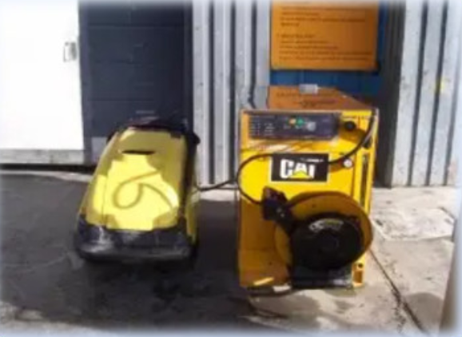
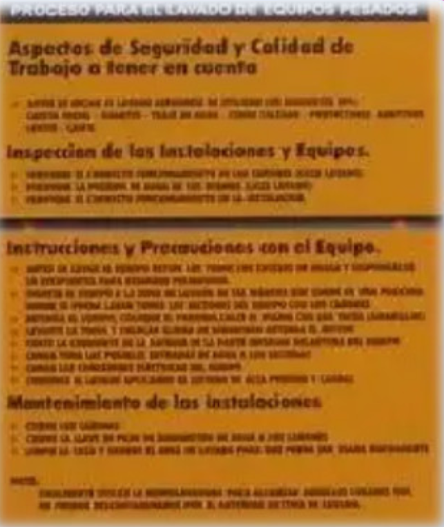
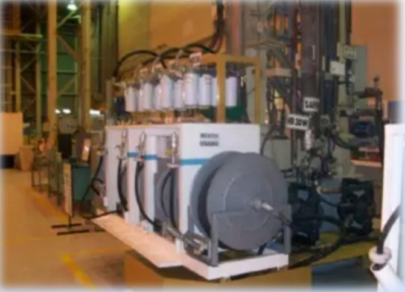
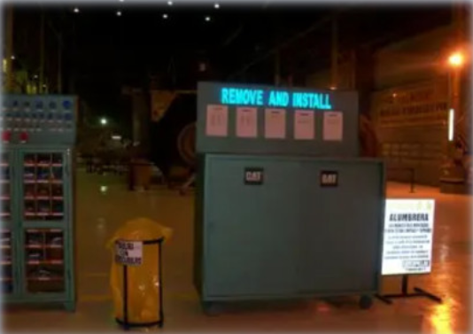
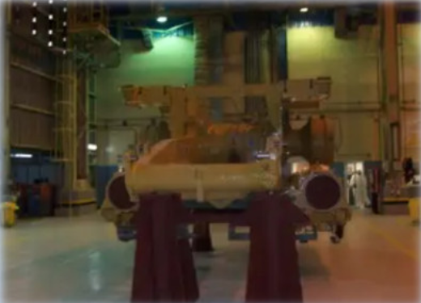

Condiciones de Trabajo
En esta sección podrás navegar por cada una de las imágenes para obtener información importante sobre las condiciones del área de trabajo.

Las instalaciones de lavado de equipos deberá estar equipada con equipo de lavado de alto volumen.

Aplicar los procedimientos de lavado de todas las maquinas y componentes antes de que ingresen a la nave del taller.

Las tuberías de suministro de aceite del taller están equipadas con filtro final y el aceite entregado cumple con el objetivo de limpieza.

Debe haber una plataforma de hormigón a la entrada del taller para evitar el ingreso de suciedad y lodo en el taller.

Durante el desarme del componente todas las cavidades expuestas de la maquina son protegidas con tapones.

Mismos con paños absorbentes, plásticos protector, copetas contenedores, articulo de aseo, tapas, tapones están disponibles.